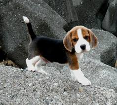
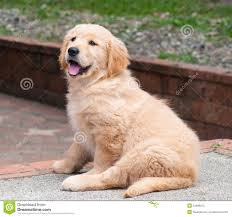

VANSHIKA SHARMA
FRONT END

DIFFERENT BREEDS THAT I LOVE
Favorite App Page

The above picture is a beagle which is a very naughty breed.Their noses guide them through life, and they’re never happier than when following an interesting scent. The Beagle originally was bred as a scenthound to track small game, mostly rabbits and hare. He is still used for this purpose in many countries, including the United States.
Favorite App Page

The Golden Retriever is one of the most popular dog breeds in the U.S. The breed’s friendly, tolerant attitude makes him a fabulous family pet, and his intelligence makes him a highly capable working dog. Golden Retrievers excel at retrieving game for hunters, tracking, sniffing out drugs, and as therapy and assistance dogs. They’re also natural athletes, and do well in dog sports such as agility and competitive obedience.
Favorite App Page
Originally the Saint Bernard dog breed was used to guard the grounds of Switzerland’s Hospice Saint Bernard as well as to help find and save lost and injured travelers. Today the St. Bernard enjoys the comforts of family life in many homes across the world. He is versatile and excels in the show ring and in obedience trials, drafting (pulling a cart or wagon), and weight pulling competitions